- PRM（Probabilistic Road Map）
- RRT (Rapidly-Exploring Random Trees)快速随机扩展树
PRM（Probabilistic Road Map）
原理
机器人运动规划的基本任务可以描述为：从开始位置到目标位置的运动。这一任务通常涉及到两项基本问题：
- 如何躲避构型空间中出现的障碍物（几何路径规划）
- 如何满足机器人本身在机械、传感方面的速度、加速度等限制（不确定性、反馈、微分约束等）
其中，基于抽样的运动规划算法是用于解决第 1 个问题的重要方法，其核心思想为：先对机器人的单个构型进行碰撞检测，建立无碰撞构型的数据库，再对不同的构型进行采样以生成无碰撞路径。该算法的优点在于具有通用性，只需要针对不同的机器人运动规划问题进行合理的参数调整。该算法的缺点在于完备性较弱，即当参数设置不合理时，即使存在可行的路径，也不一定能够找到。
典型的抽样规划方法有综合查询方法和单一查询方法两类。前者首先构建路线图，先通过采样和碰撞检测建立完整的无向图，以得到构型空间的完整连接属性。再通过图搜索即可得到可行的路径。后者则从特定的初始构型出发局部建立路线图，在构型空间中延伸树型数据结构，最终使它们相连。
本文介绍的概率路线图（Probabilistic Roadmap，PRM）属于综合查询方法，其步骤如下：
预处理：
- 初始化。设 G(V,E)为一个无向图，其中顶点集V 代表无碰撞的构型，连线集 E 代表无碰撞路径。初始状态为空。
- 构型采样。从构型空间中采样一个无碰撞的点 α(i) 并加入到顶点集 V 中。
- 领域计算。定义距离 p ，对于已经存在于顶点集 V 中的点，如果它与 α(i) 的距离小于 p ，则将其称作点 α(i) 的邻域点。
- 边线连接。将点 α(i) 与其领域点相连，生成连线 t。
- 碰撞检测。检测连线 t 是否与障碍物发生碰撞，如果无碰撞，则将其加入到连线集 E 中。
- 结束条件。当所有采样点（满足采样数量要求）均已完成上述步骤后结束，否则重复2-5。
搜索：
采用图搜索算法对无向图G进行搜索，如果能找到起始点A到终点B的路线，说明存在可行的运动规划方案。
实现
下面通过python编程予以实现，源代码下载地址：
实现思路如下：
1.先绘制一个500*500像素的bmp图像，用白色表示可行的构型空间，用深色表示障碍区域：
注释：这里的二维构型空间的横纵坐标可以有多种理解。对于平面型移动机器人，横纵坐标可以表示其在平面上的位置坐标，障碍区域为平面上的不可达区域坐标；对于二自由度的关节型机器人，横纵坐标可以分别表示其两个关节的转角，障碍区域为不可达区域在关节空间的映射。
 图 1 构型空间与障碍区域地图
图 1 构型空间与障碍区域地图
2.为了便于碰撞检测，我们再把图像变为黑白，使用了opencv中的灰度化函数cvtColor()和二值化函数threshold()。
 图 2 二值化后的地图
图 2 二值化后的地图
3.构型采样。在图中随机采样一定数量（如50个）的无碰撞点。需要进行碰撞检测check_point()，抛弃与障碍物发生碰撞的点。（此处绘图仍然采用原地图，但碰撞检测使用的是二值化地图）
注意：左上角和右下角两个点是规划的起点和终点，在顶点集中的索引为0和1
 图 3 随机采样50个无碰撞点
图 3 随机采样50个无碰撞点
4.邻域计算，边线连接与碰撞检测。对每一个点，取其领域内（例如直线距离在200以内）的所有点进行连线，对连线进行碰撞检测，将结果存放在邻接矩阵中。
这里可以看到，由于邻域和碰撞的限制，右上角两个点和其余点不存在合理的连线。
 图 4 检测并存储无碰撞的邻域连线
图 4 检测并存储无碰撞的邻域连线
5.A搜索。采用A搜索算法对上图进行搜索，找到从左上到右下的最短路径，即为可行的路径规划方案。
 图 5 A*搜索得到的最优路径
图 5 A*搜索得到的最优路径
讨论
1.采样数量的影响
显然，对同一地图，采样点的数量越多，找到合理路径以及更优路径的概率就越大。但同时，采样点数量越多，计算与搜索时间也会更长。
如果只设置10个采样点，邻域200。可以看到，并不能找到可行路径，这也说明了抽样规划算法存在的完备性弱的问题。

而若设置50和100个采样点，虽然都能找到可行路径，但耗时却存在差异。
如果采样点设置为50，耗时1.323s；设置为100，耗时4.663s

2.邻域设置的影响
邻域的设置影响着连线的建立与检测。当邻域设置过小，由于连线路径太少，可能找不到解；当领域设置太大，会检测太多较远的点之间的连线，而增加耗时。
如果邻域设置为100，找不到解；设置为1000，耗时4.470s，耗时较长


由上述结果可以看到，概率路线图(PRM)方法适用范围很广，对于不同的应用场景，只需要调整相应的参数即可。


但需要注意，抽样方法的完备性很弱，即使空间中存在合理的路径，由于抽样参数的设置问题，也可能无法找到路径；另外，由于抽样过程的随机性，该方法的稳定性也不好，对于同样的问题，前后两次的解也不一样，因此在严格要求稳定性的场合并不适用。
项目地址
参考文献
[1] Siciliano B, Oussama K. Springer Handbook of Robotics[M]. 2007.
RRT (Rapidly-Exploring Random Trees)快速随机扩展树
我们讲到了机器人运动规划中一个比较重要的方法——概率路线图（PRM）方法，并通过编程进行了演示和分析，下面简单回顾如下：
- 机器人运动规划的基本任务为从开始位置运动到目标位置
- 主要难点有二：躲避障碍物（全局约束）和满足自身运动性能（微分约束）
- 抽样规划是解决全局约束问题的重要方法
- 抽样规划算法分为综合查询方法和单一查询方法
- 综合查询方法的代表为概率路线图算法(PRM)，单一查询方法的代表为快速扩展随机树算法(RRT)
本章我们同样用一个例子来讲解快速扩展随机树算法(RRT)算法。
其实RRT算法与PRM算法十分类似，都是通过抽样来在已知的地图上建立无向图，进而通过搜索方法寻找相对最优的路径。不同点在于，PRM算法在一开始就通过抽样在地图上构建出完整的无向图，再进行图搜索；而RRT算法则是从某个点出发一边搜索，一边抽样并建图。
与PRM算法相同，RRT算法也是概率完备的：只要路径存在，且规划的时间足够长，就一定能确保找到一条路径解。注意“且规划的时间足够长”这一前提条件，说明了如果规划器的参数设置不合理（如搜索次数限制太少、采样点过少等），就可能找不到解。
算法说明
我们可以把RRT算法比较形象地看做“树型算法”。它从一个起始构型（对于二维图，就是一个点）出发，不断延伸树型数据，最终与目标点相连。先放一张规划的结果可能更加便于理解：
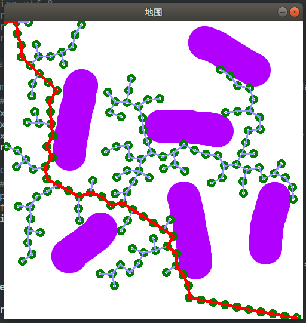图 1 RRT 算法，从左上角出发呈树型向目标点延伸
算法的步骤如下：
1.初始化
选择或绘制一张bmp格式的图像，作为规划的构型空间，为了便于进行碰撞检测，将其二值化。选择左上角[0, 0]点作为起始点；右下角[499, 499]作为目标点。
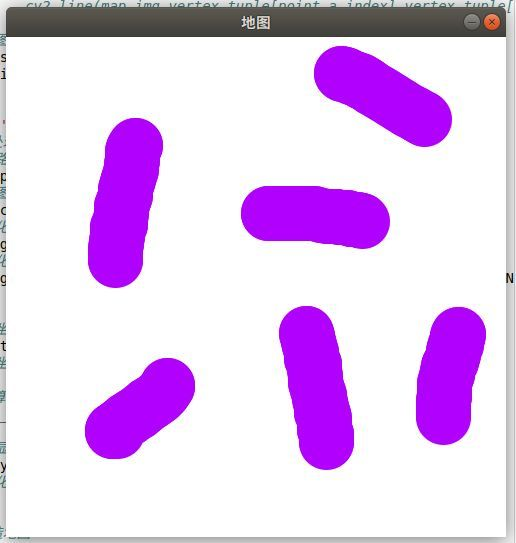原图像
 二值化图像
二值化图像
2. 随机采样
我们已经确定了规划的起始点，按道理它需要不断地向着目标点进行生长。但需要注意的是，由于存在障碍物，如果我们让树型一味朝着目标点延伸，则可能会因为“撞墙”而失败。因此，我们采取了一种随机采样方法：在每次选择生长方向时，有一定的概率会向着目标点延伸，也有一定的概率会随机在地图内选择一个方向延伸一段距离，关键代码如下：
# 利用rand()函数在[0,1]区间内随机生成一个数
if np.random.rand() < 0.5:
# 如果小于0.5，则在图 img_binary 的范围内随机采样一个点
sample = np.mat(np.random.randint(0,
img_binary.shape[0] - 1,
(1, 2)))
else:
# 否则用目标点作为采样点
sample = self.point_goal
我们每一步让RRT树有0.5的概率直接采样终点向目标点前进，有0.5的概率向地图内任意方向前进。
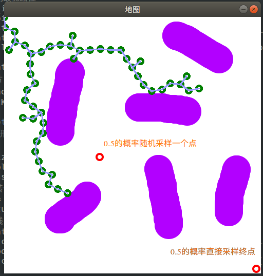图 2 随机采样一个点，或直接采样终点，概率各一半
3.生长点选择与碰撞检测
从图 2 可以看到，由于每次生长都存在一定的随机性，因此RRT树会逐渐出现许多分支，那么每一步中我们该如何选择要延伸哪个分支呢？这里我们直接选择RRT树中离采样点最近的点，并向其延伸。
假设我们采样了空间中随机一个点，接下来从现有的RRT树中选择离采样点最近的一个点，并向采样点延伸一段距离。假如在这段延伸中没有发生碰撞（碰撞检测），而且新点与现有的所有点的距离大于某个判断阈值（防止生长到RRT已经探索过的位置），则将这个新点也加入RRT树。
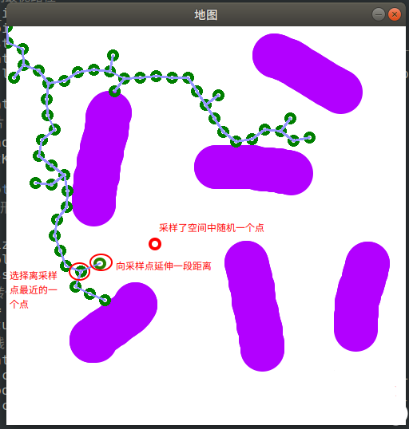
4. 终止条件
由于我们每次延伸的距离是固定的，所以并不能保证最后一次延伸能够刚好到达终点的位置，更可能的情况是在终点周围来回跳动。因此我们设定一个阈值，假如本次延伸的新点与终点的距离小于这个阈值，我们就认为已经规划成功。
下面是随机采样概率0.5，步长20，采样上限20000次的结果
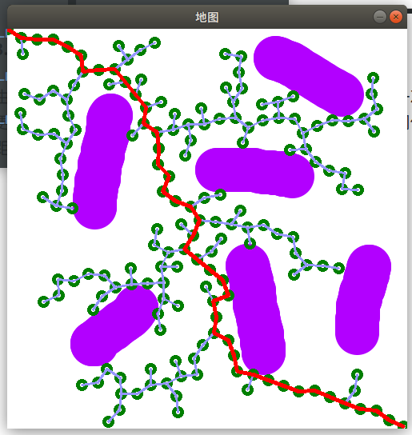成功找到路径
分析
前面提到，RRT算法是概率完备的，预设参数可能对规划结果造成影响。那么有哪些参数会影响规划效果呢？这里我列举几个：
随机采样概率：
我们每一次采样，都有一定概率朝着任意方向走，或朝着终点走。这个概率显然会影响搜索效果。给人最直接的感觉是，随机采样的概率越大，RRT树的分支也就越多，反之则难以发生新的分支。下面我们修改随机采样概率来看看效果。
设随机采样的概率为0.01，采样上限20000次。可以看到，直到达到采样上限也没有成功找到解。这是因为RRT产生分支的概率太小，经历了许多次碰撞才能凭借分支绕过障碍物。
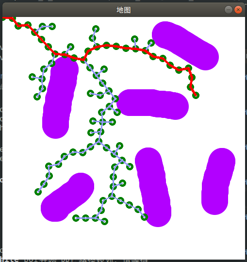随机采样的概率为0.01，采样上限20000次
设随机采样的概率为1.0，采样上限20000次。可以看到，虽然规划得以成功，但由于生长缺乏方向性，其实是一种“碰运气”式的搜索。RRT树的分支填充了所有空间直至找到目标点。这样的搜索会消耗大量的时间。
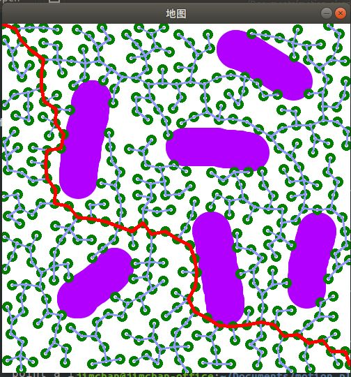随机采样的概率为1.0，采样上限20000次
生长步长：
我们的RRT树每一次延伸，都有一个固定的步长。这个步长的设置显然也会影响树的形状。当步长太大时，可能由于太过笨拙而无法成功绕过障碍物；当步长过小时，生长的速度显然会有所减慢（因为同样的距离要生长更多次）。一般来说，空间越复杂，步长越小。这里必须注意的是，生长步长一定要比判断是否为同一个采样点的阈值要大。
步长10，采样上限20000次。可以看到，采样点极其密集，消耗的时间更长。
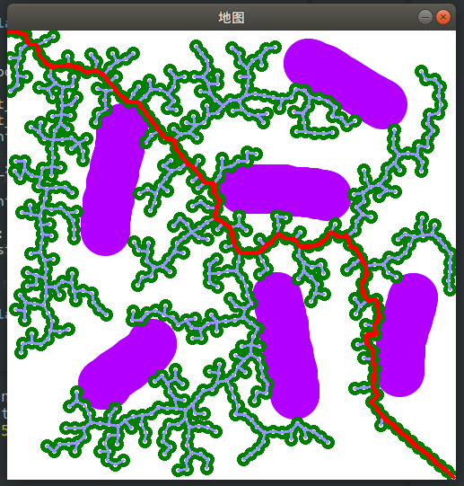步长10，采样上限20000次
步长200，采样上限20000次。没有搜索到最终结果，可以看到，由于步长太大，生长点在障碍物与终点之间来回跳动，始终不能满足碰撞检测或终止条件的要求。
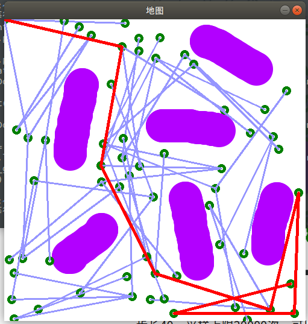步长200，采样上限20000次
更多演示
RRT算法的适用性同样很广，举例如下：
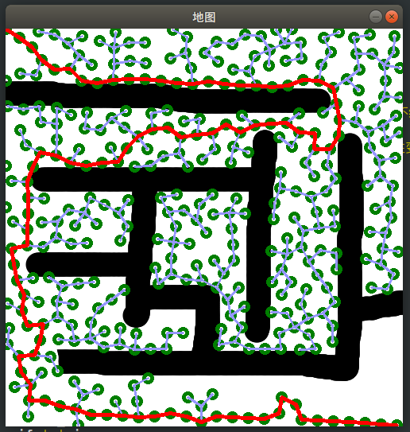
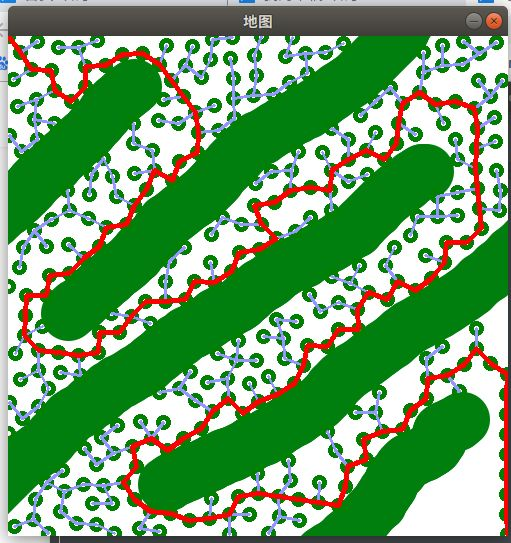
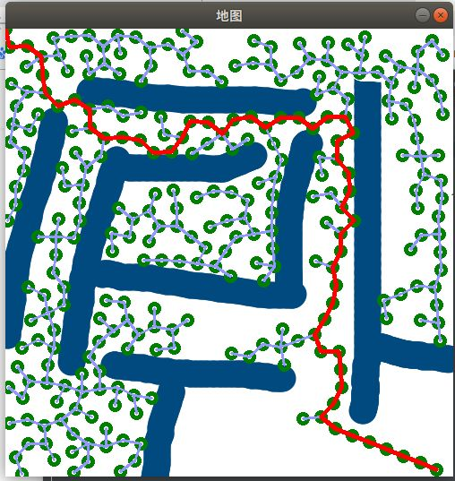
参考文献：
[1] Siciliano B, Oussama K. Springer Handbook of Robotics[M]. 2007.
[2] RRT路径规划算法 XXX已失联